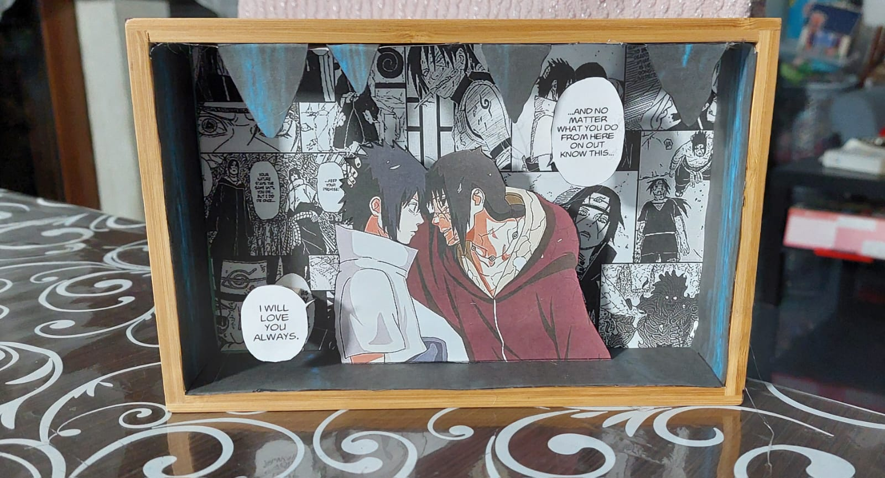

Portachiavi e gadget in plastica termica
I nostri portachiavi e gadget sono realizzati in plastica termica, un materiale speciale che si ritrae in forno.
Ogni pezzo è unico perché il disegno viene creato interamente a mano e successivamente colorato con cura.
Questo processo artigianale garantisce prodotti originali, colorati e perfetti per collezionisti, appassionati di anime e manga, o come piccoli regali personalizzati.
Leggeri, resistenti e dal design esclusivo, i nostri portachiavi e gadget portano creatività e passione ovunque tu voglia!

Segnalibri in cartoncino
I nostri segnalibri sono realizzati in cartoncino di alta qualità e stampati con stampante a getto di inchiostro impostata su alta qualità di stampa.
Grazie a questo processo, ogni segnalibro è nitido, colorato e perfetto per collezionisti o come piccolo regalo speciale.
Resistenti, leggeri e dal design accurato, i nostri segnalibri portano creatività e passione ovunque tu voglia!

Quadretti tridimensionali
I nostri quadretti tridimensionali sono realizzati con cornice in legno e personaggi in cartoncino di alta qualità, creando un effetto 3D realistico e accattivante.
Ogni composizione è studiata per dare profondità e movimento, rendendo ogni quadretto un oggetto unico, perfetto da esporre o regalare agli appassionati di anime e manga.
Grazie alla cura nella disposizione degli elementi e ai dettagli accurati, i nostri quadretti portano colore, creatività e stile in ogni ambiente!

Altri prodotti in arrivo
Stiamo preparando tante novità per i nostri collezionisti! Restate sintonizzati per nuovi portachiavi, segnalibri, quadretti e altre sorprese creative.
Tutti i prodotti saranno realizzati con la stessa cura, attenzione ai dettagli e passione per i personaggi che amate.